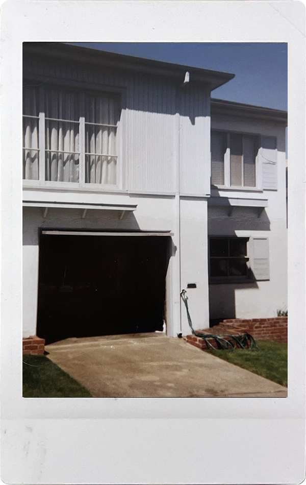
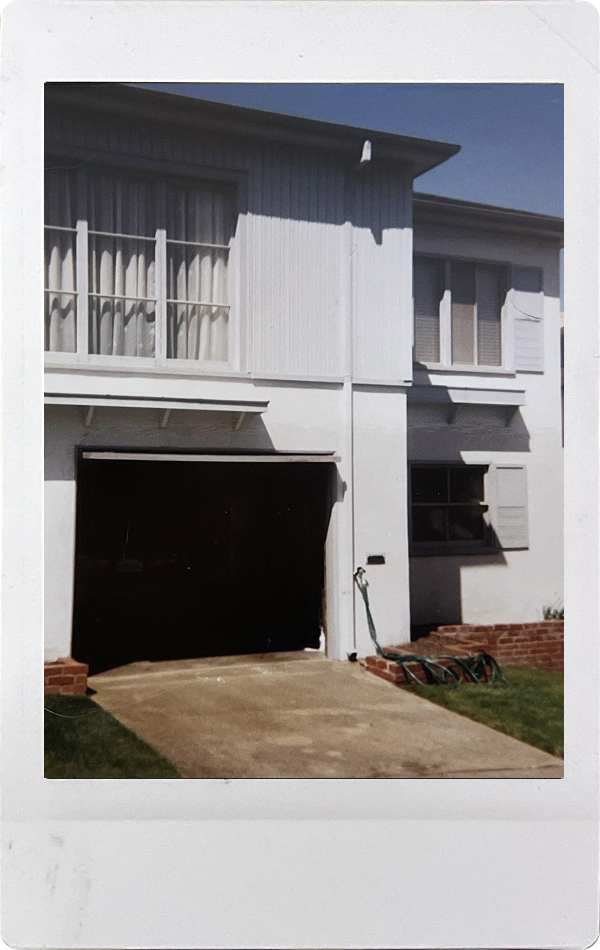
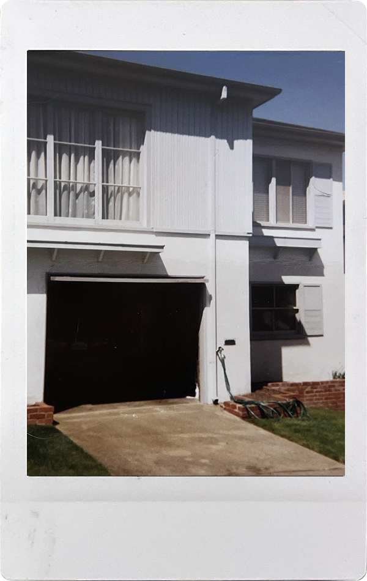

Hover over each polaroid to develop the photo

I was born in San Francisco in 2003 and called it home for three years. This was the home I was brought into and the home where new life was celebrated.
The home I spent 15 years growing up in. Where I learned how to ride a bike, welcomed my beloved cat, and bonded over board games with my family. This was my cat's favorite lounging place, on a high ledge!
Entering adulthood meant new beginnings and a new home. At Davis I met many new people, discovered so much more about myself, and gained many life experiences.